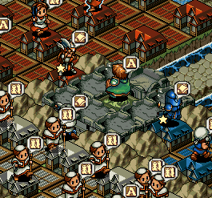

| 概要 | 情報 | ステージ攻略 |
| 地図 | テクニック | モナモナ攻略へ |
まず、スタートする前に税金を最大の30% に設定してください。 次に上の画像のMユニットがいる位置に待機するよう指示をしてからゲームをスタートしてください。  青国の資金が2000G を下回るまでは、自国の城が壊されているのをのんきに眺めていてください。 青国の資金が2000G を下回ったら、すぐに青国の城を壊してください。 青国の王様を倒したら、青国の領土にいる兵士は無視して、上の画像のようにお金を回収してください。 全て回収し終わったら、次は赤国の城を壊してください。そして、赤国の王様を倒したら、先ほど同様お金を回収してください。 最後の白国も城を壊すのですが、兵力が足りなくなるはずなので、上の画像のように赤、青どちでもいいので兵力を補充して壊してください。 |
| 概要 | 情報 | ステージ攻略 |
| 地図 | テクニック | モナモナ攻略へ |